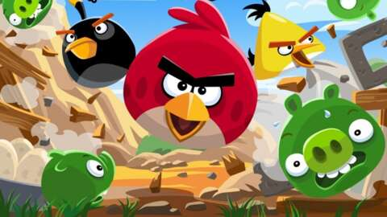
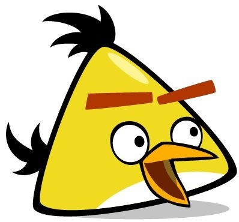

Angry Birds is a popular mobile game developed by Rovio Entertainment, first released in 2009. The game became a global sensation due to its simple yet addictive gameplay, cute characters, and fun physics-based puzzles.
Premise
In the game, the player uses a slingshot to launch a variety of birds at structures made of materials like wood, glass, and stone. These structures are inhabited by green pigs, who have stolen the birds' eggs. The goal is to destroy all the pigs on the screen by strategically launching birds with different abilities to collapse the structures and eliminate the pigs.

Chuck (also known as the Yellow Bird) is one of the two deuteragonists (alongside Bomb) of the Angry Birds series. He is an Atlantic canary with incredibly high speed and a member of the Angry Birds.
Gameplay Information
- Size: Medium
- Strength: Strong
- Power: Super speed
Appearance
The earliest known appearance of Chuck had him as a yellow-colored, triangular-shaped bird with two feathers on his head and two large eyes with black pupils...
Back to top
The picture of Angry Birds
Contact Us
{kind=link}